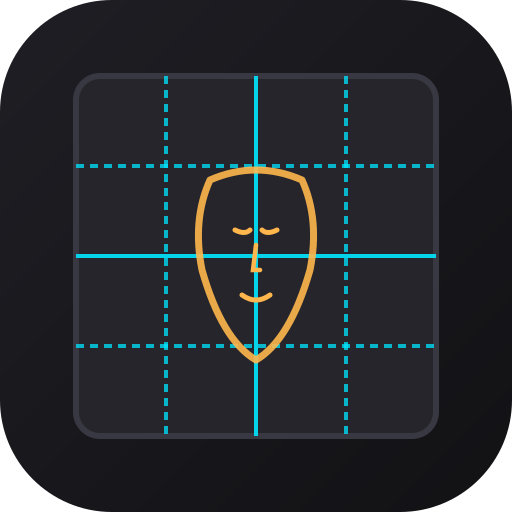

Mis Retratos
Proyectos de pintura y dibujo con método de cuadrícula
Ajustes de Cuadrícula
Filas:
4
Columnas:
4
Color de Línea:
Grosor:
Diagonales (Encaje):
Letras y Números:
Ajustes de Boceto & Fusión
Opacidad:
65%
Modo de Fusión:
Escala fina:
100%
Rotación fina:
0°
Nuevo Retrato / Proyecto
Toca para elegir la foto de referencia
Se optimizará automáticamente a 2048px